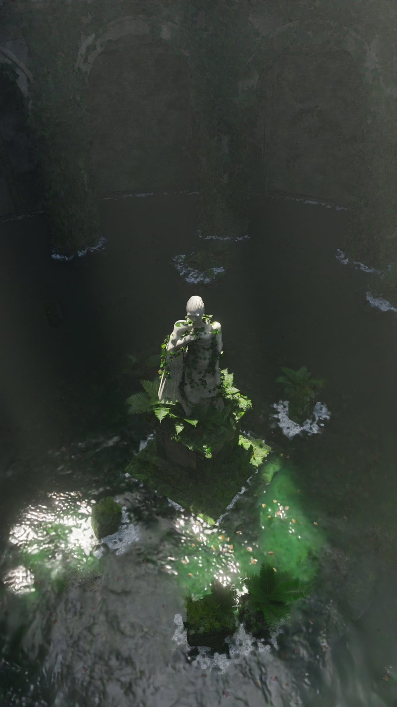
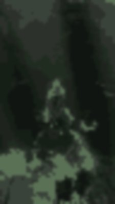
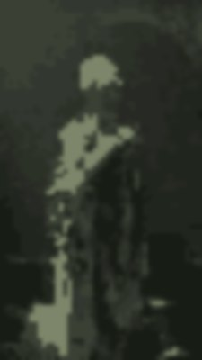
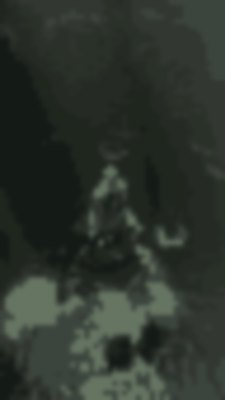

Prologue
Before the water

It started with twelve seconds of someone else’s reel — a drowned rotunda by simonzhang.art: ivy, green water, a woman in marble standing very still in the middle of it all. I watched it more times than I’d like to admit. Not for the light. For her.
Who builds a round room, floods it, and leaves exactly one person inside?
This sketchbook is my answer: a myth, a rule, a lot of stone and a few billion triangles’ worth of trying. Everything in it was built from nothing — the arches, the ivy, her face — with code first, then Blender, then Unreal, and now this page. Some of it took a day. Her face took five tries.
rule nº1 — the room has to be round.
no corners to hide in.
plan at +2.6 m — first sketch
colour keys, frame by frame — green is the only loud thing in the room


